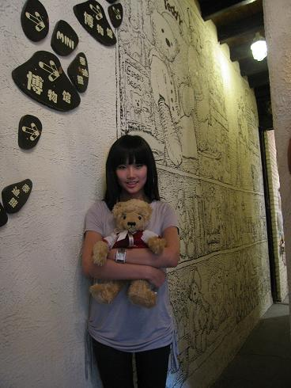
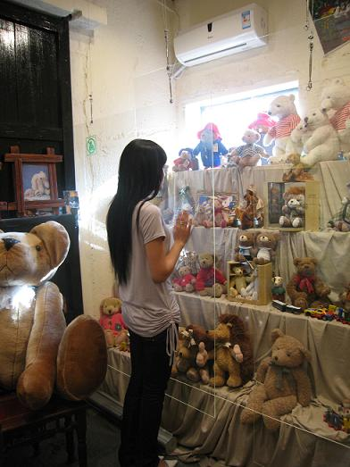
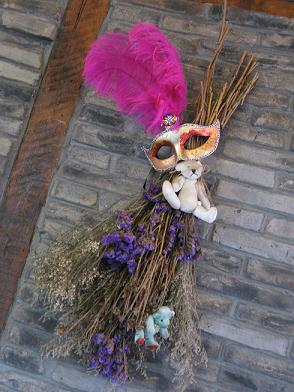
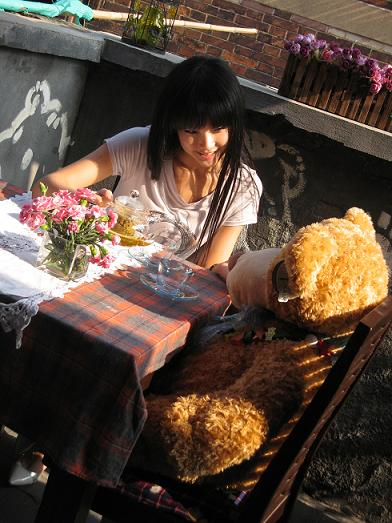
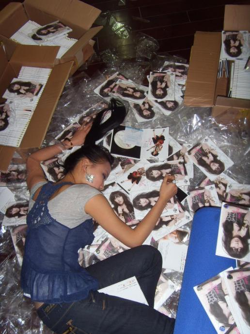

请跟着我一起闯入熊出没的地方吧。

这面墙壁很特别，画着非常可爱的泰迪熊，一进门就象掉进了童话世界。

橱窗里摆满了各种各样的泰迪熊，不同的年代，不同的款式，但是每一个都是店主精心收集，每一个都有专属的故事，静静的坐在那里，仿佛在对我们诉说什么。
泰迪熊其实很爱美，他们有各种各样的配饰。
比我还要庞大的泰迪熊。
红色的泰迪熊，非常特别。
玩的乐此不疲。

泰迪熊在开化妆舞会。
小熊饼干和小熊CAPPUCCINO，完全就是艺术品，舍不得吃的。

在这个午后，和小熊一起晒着太阳，开心的聊天。
然后甜蜜的睡去。
---------------------------------------------------------------------------------------分界线

喜欢黄龄的朋友可以经常来我的blog和我的贴吧（请点击我）
新专辑《痒》主打歌《痒》试听
新专辑《痒》第二波主打《红眼睛》试听
新专辑《痒》High到不行的《High歌》试听
新专辑《痒》的全部试听
－－－－－－－－－－－－－－－－－－－－－－－－－－－－－－－－－－－－－－－分界线我又来了
昨天去参加了《怀旧金曲》的节目录制，我要演唱邓丽君的二首歌《又见炊烟》和《我怎能离开你》。邓丽君的歌超难唱的，表面看起来试温婉的小调，但是里面隐藏很多转音，不能靠爆发力上去，因为她的歌曲的力量都是往里面收的。而且我还要穿着或者鹅黄或者美人鱼般的礼服拗造型，不过录制出来效果超好，我都不认识自己了。哈哈。